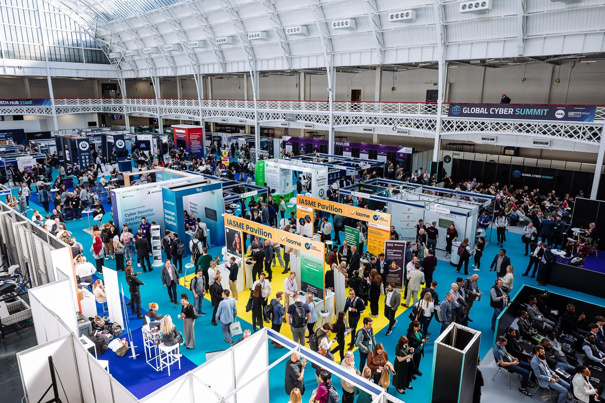

Conferences · Tech
International Cyber Expo 2027
- Dates
- –
- Venue
- Olympia London
- Location
- London, United Kingdom
- Format
- In-person
- Category
- Tech
- Industry
- Tech
- Expected attendance
- 7,500
- Official website
- https://www.internationalcyberexpo.com/
About
Topics: cyber security, infosec.
Official homepage: 7500+ high-level visitors, 100+ exhibitors.
Sources
- Official — https://www.internationalcyberexpo.com/
Hotels
- Hyatt Regency London Olympia — 5★ · 7 Olympia Way, London W14 0EY, United Kingdom · 0.1 km from the venue · Price on request
- Royal Garden Hotel — 5★ · 2-24 Kensington High Street, London, United Kingdom · 1.7 km from the venue · Price on request
- The Kensington Hotel — 5★ · 109-113 Queen's Gate, London, United Kingdom · 2.3 km from the venue · Price on request
- 100 Queen's Gate Hotel London, Curio Collection by Hilton — 5★ · 100 Queen's Gate, London, United Kingdom · 2.2 km from the venue · Price on request
- Novotel London West — 4★ · 1 Shortlands, Hammersmith, London, United Kingdom · 0.8 km from the venue · Price on request
- Hilton London Olympia — 4★ · 380 Kensington High Street, London W14 8NL, United Kingdom · 0.3 km from the venue · Price on request
- Ember Locke, Kensington — 4★ · 202-220 Cromwell Road, Earl's Court, London, United Kingdom · 1.1 km from the venue · Price on request
- Hotel Indigo London – Kensington — 4★ · 34-44 Barkston Gardens, Earl's Court, London, United Kingdom · 1.4 km from the venue · Price on request
- Raffles London at The OWO — 5★ · The Old War Office, Whitehall, London SW1A, United Kingdom · 6.0 km from the venue · Price on request
- JW Marriott Grosvenor House London — 5★ · 90 Park Lane, Mayfair, London W1K 7TN, United Kingdom · 4.1 km from the venue · Price on request · Venue page
Venue
- Olympia London — Exhibition grounds · Hammersmith Road, London W14 8UX